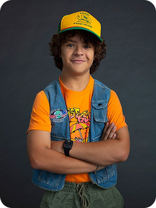
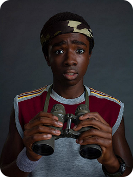
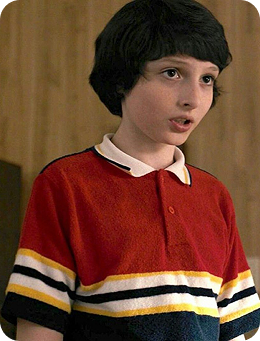
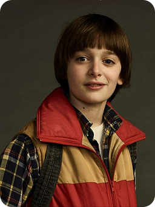

Дастин Хендерсон -
один из главных героев сериала Netflix «Очень странные дела». Он принадлежит к группе друзей,
которых называют «Клуб» или «Партия», куда также входят Майк, Лукас, Уилл и Одиннадцать.

Лукас Синклер -
вырос в Хоукинсе и дружит с Майком Уилером и Уиллом Байерсом с ранних лет. В четвертом классе к
их компании присоединился Дастин Хендерсон. Вместе они часто собираются в доме Майка, чтобы
играть в «Подземелья и драконов»

Майк Уилер -
один из главных героев сериала «Очень странные дела», лучший друг Дастина, Лукаса и Уилла. Он
является лидером группы подростков и участвует в приключениях, связанных с паранормальными
событиями в Хоукинсе.

Уилл Байерс -
один из главных героев сериала «Очень странные дела», младший сын Джойс и Лонни Байерсов, младший
брат Джонатана. Он застенчивый, добрый и робкий мальчик, которого в первом сезоне похищает
Векна и утаскивает в «Обратную сторону».